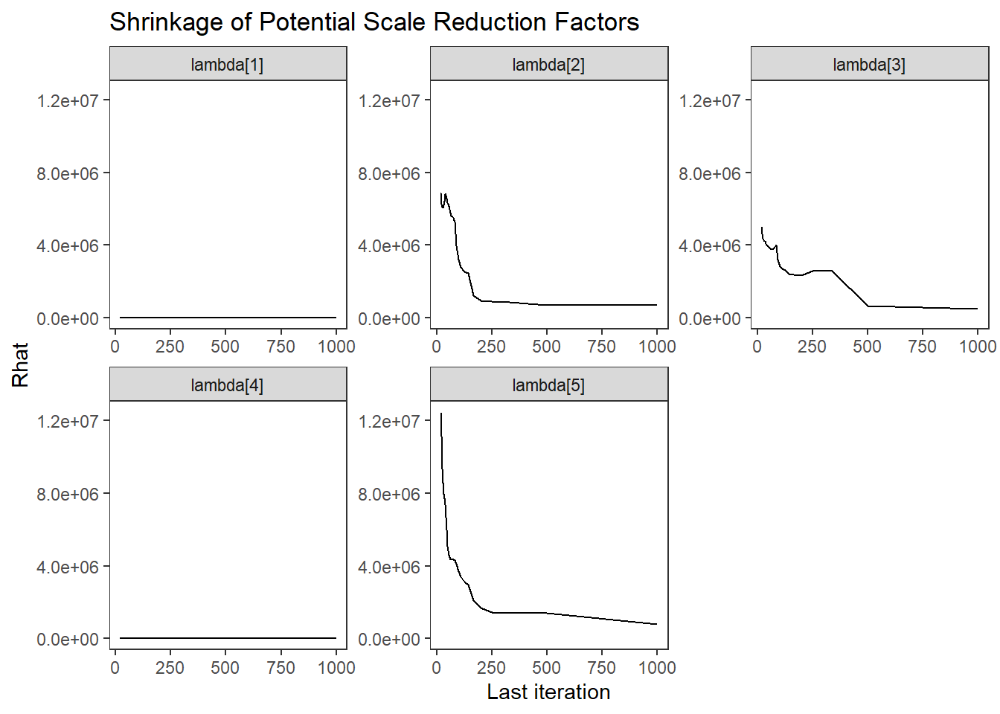
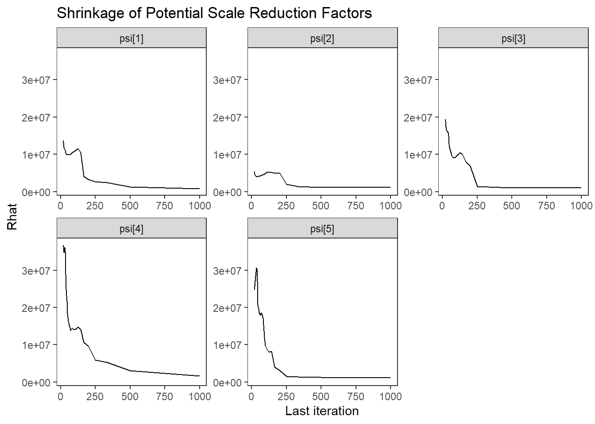
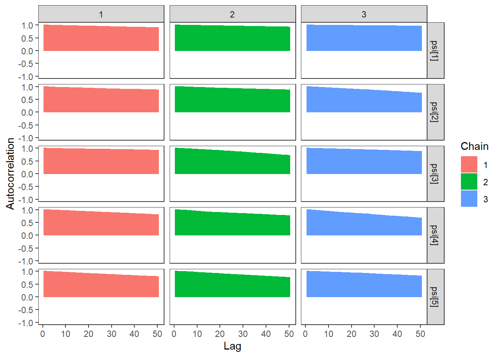
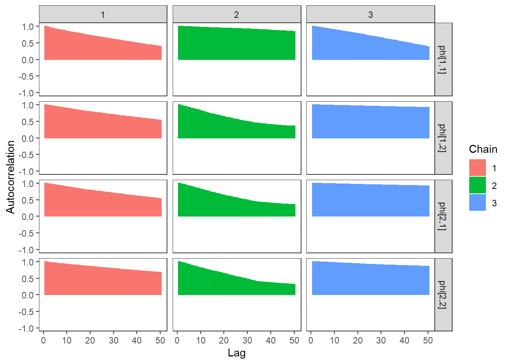
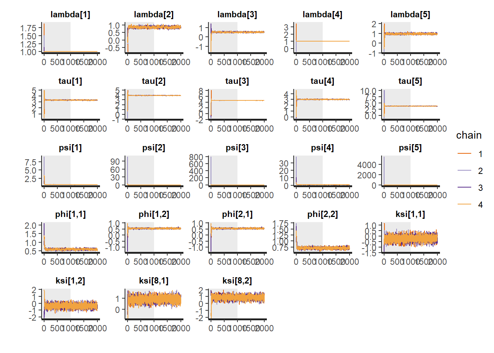
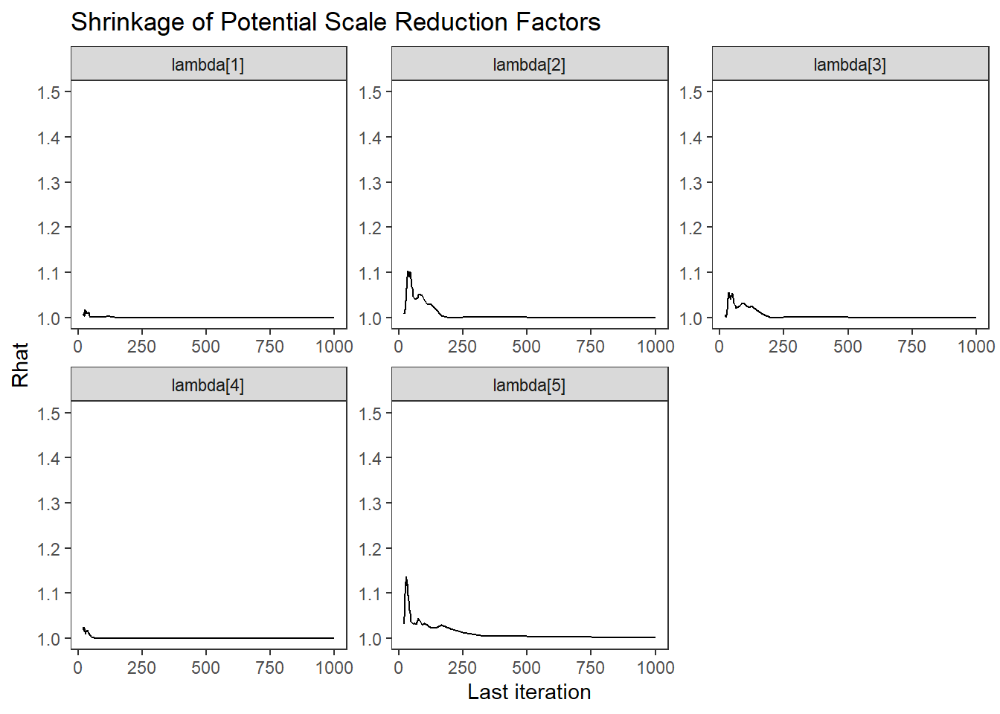
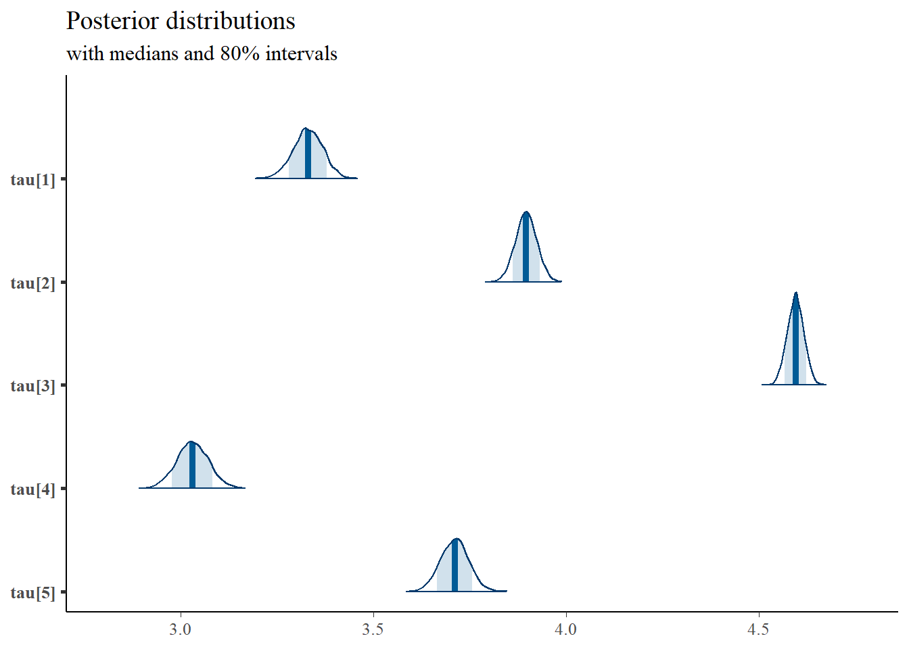
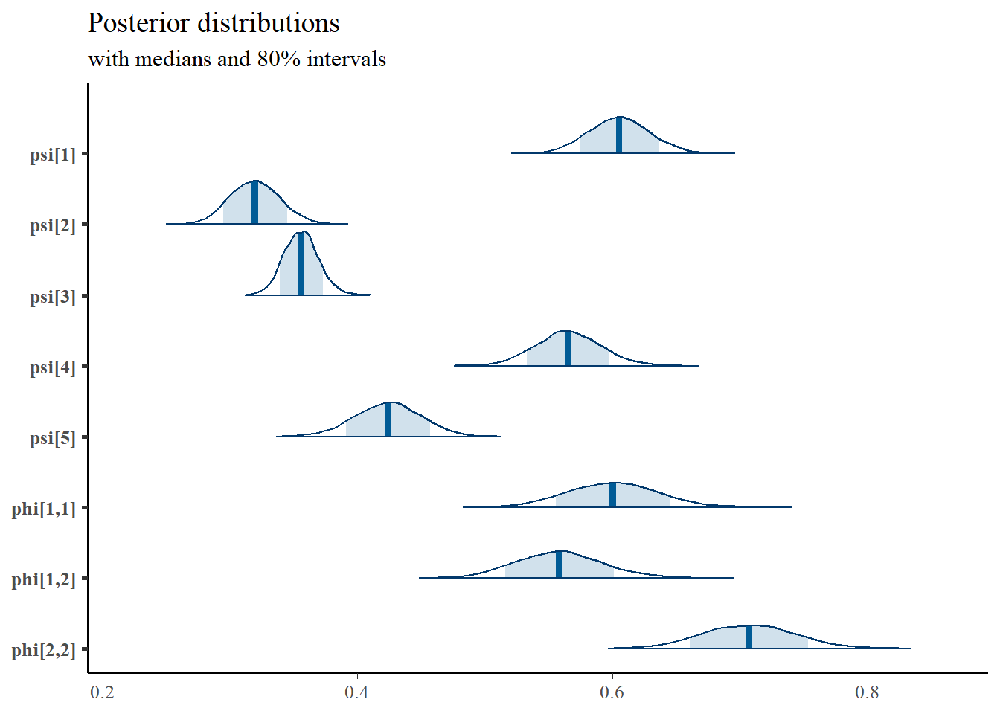

9.6 Stan - Two Latent Variable
9.6.1 Inverse-Wishart Prior
Using Stan based on a nearly identical model structure presented in the text.
model_cfa_2factor <- "
data {
int N;
int J;
int M;
matrix[N, J] X;
matrix[M, M] phi0;
}
parameters {
matrix[M, M] phi; // latent variable covaraince matrix
matrix[N, M] ksi; //latent variable values
real lambda[J]; //factor loadings matrix
real tau[J]; //intercepts
real<lower=0> psi[J]; //residual variance
}
model {
// likelihood for data
for(i in 1:N){
X[i, 1] ~ normal(tau[1] + ksi[i,1]*lambda[1], psi[1]);
X[i, 2] ~ normal(tau[2] + ksi[i,1]*lambda[2], psi[2]);
X[i, 3] ~ normal(tau[3] + ksi[i,1]*lambda[3], psi[3]);
X[i, 4] ~ normal(tau[4] + ksi[i,2]*lambda[4], psi[4]);
X[i, 5] ~ normal(tau[5] + ksi[i,2]*lambda[5], psi[5]);
// prior for ksi
ksi[i] ~ multi_normal(rep_vector(0, M), phi);
}
// latent variable variance matrix
phi ~ inv_wishart(2, phi0);
// prior for measurement model parameters
tau ~ normal(3, 10);
psi ~ inv_gamma(5, 10);
lambda[1] ~ normal(1, .001);
lambda[2] ~ normal(1, 10);
lambda[3] ~ normal(1, 10);
lambda[4] ~ normal(1, .001);
lambda[5] ~ normal(1, 10);
}
"
# data must be in a list
dat <- as.matrix(read.table("code/CFA-Two-Latent-Variables/Data/IIS.dat", header=T))
mydata <- list(
N = 500, J = 5,
M = 2,
X = dat,
phi0 = matrix(c(1, .3, .3, 1), ncol=2)
)
# # initial values
start_values <- list(
list(
phi= structure(
.Data= c(1, 0.30, 0.30, 1),
.Dim=c(2, 2)),
tau = c(3, 3, 3, 3, 3),
lambda= c(1, 1, 1, 1, 1),
psi=c(.5, .5, .5, .5, .5)
),
list(
phi= structure(
.Data= c(1, 0, 0, 1),
.Dim=c(2, 2)),
tau = c(5, 5, 5, 5, 5),
lambda= c(1, .7, .7, 1, .7),
psi=c(2, 2, 2, 2, 2)
),
list(
phi= structure(
.Data= c(1, 0.10, 0.10, 1),
.Dim=c(2, 2)),
tau = c(1, 1, 1, 1, 1),
lambda= c(1, 1.3, 1.3, 1, 1.3),
psi=c(1, 1, 1, 1, 1)
)
)
# Next, need to fit the model
# I have explicitly outlined some common parameters
fit <- stan(
model_code = model_cfa_2factor, # model code to be compiled
data = mydata, # my data
init = start_values, # starting values
chains = 3, # number of Markov chains
#warmup = 1000, # number of warm up iterations per chain
iter = 10000, # total number of iterations per chain
cores = 3, # number of cores (could use one per chain)
control = list(adapt_delta = 0.9,
max_treedepth = 12),
refresh = 0 # no progress shown
)## Warning in system(paste(CXX, ARGS), ignore.stdout = TRUE, ignore.stderr =
## TRUE): '-E' not found## Warning: There were 14910 divergent transitions after warmup. See
## http://mc-stan.org/misc/warnings.html#divergent-transitions-after-warmup
## to find out why this is a problem and how to eliminate them.## Warning: There were 90 transitions after warmup that exceeded the maximum treedepth. Increase max_treedepth above 12. See
## http://mc-stan.org/misc/warnings.html#maximum-treedepth-exceeded## Warning: Examine the pairs() plot to diagnose sampling problems## Warning: The largest R-hat is 3.8, indicating chains have not mixed.
## Running the chains for more iterations may help. See
## http://mc-stan.org/misc/warnings.html#r-hat## Warning: Bulk Effective Samples Size (ESS) is too low, indicating posterior means and medians may be unreliable.
## Running the chains for more iterations may help. See
## http://mc-stan.org/misc/warnings.html#bulk-ess## Warning: Tail Effective Samples Size (ESS) is too low, indicating posterior variances and tail quantiles may be unreliable.
## Running the chains for more iterations may help. See
## http://mc-stan.org/misc/warnings.html#tail-ess# first get a basic breakdown of the posteriors
print(fit,
pars =c("lambda", "tau", "psi",
"phi",
"ksi[1, 1]", "ksi[1, 2]",
"ksi[8, 1]", "ksi[8, 2]"))## Inference for Stan model: 9cba7ccbea0f9cb6bfe744cf6be59b64.
## 3 chains, each with iter=10000; warmup=5000; thin=1;
## post-warmup draws per chain=5000, total post-warmup draws=15000.
##
## mean se_mean sd 2.5% 25% 50% 75% 97.5% n_eff
## lambda[1] 1.00 0.00 0.00 1.00 1.00 1.00 1.00 1.00 2
## lambda[2] 1.00 0.20 0.24 0.70 0.70 1.00 1.30 1.30 2
## lambda[3] 1.00 0.20 0.24 0.70 0.70 1.00 1.30 1.30 2
## lambda[4] 1.00 0.00 0.00 1.00 1.00 1.00 1.00 1.00 2
## lambda[5] 1.00 0.20 0.24 0.70 0.70 1.00 1.30 1.30 2
## tau[1] 3.00 1.33 1.63 1.00 1.00 3.00 5.00 5.00 2
## tau[2] 3.00 1.33 1.63 1.00 1.00 3.00 5.00 5.00 2
## tau[3] 3.00 1.33 1.63 1.00 1.00 3.00 5.00 5.00 2
## tau[4] 3.00 1.33 1.63 1.00 1.00 3.00 5.00 5.00 2
## tau[5] 3.00 1.33 1.63 1.00 1.00 3.00 5.00 5.00 2
## psi[1] 1.17 0.51 0.62 0.50 0.50 1.00 2.00 2.00 2
## psi[2] 1.17 0.51 0.62 0.50 0.50 1.00 2.00 2.00 2
## psi[3] 1.17 0.51 0.62 0.50 0.50 1.00 2.00 2.00 2
## psi[4] 1.17 0.51 0.62 0.50 0.50 1.00 2.00 2.00 2
## psi[5] 1.17 0.51 0.62 0.50 0.50 1.00 2.00 2.00 2
## phi[1,1] 1.00 0.00 0.00 1.00 1.00 1.00 1.00 1.00 5
## phi[1,2] 0.13 0.10 0.12 0.00 0.00 0.10 0.30 0.30 2
## phi[2,1] 0.13 0.10 0.12 0.00 0.00 0.10 0.30 0.30 2
## phi[2,2] 1.00 0.00 0.00 1.00 1.00 1.00 1.00 1.00 2
## ksi[1,1] 0.81 1.01 1.24 -0.91 -0.91 1.43 1.93 1.93 2
## ksi[1,2] 0.62 0.72 0.89 -0.57 -0.57 0.85 1.56 1.56 2
## ksi[8,1] 0.14 0.62 0.76 -0.84 -0.84 0.27 1.00 1.00 2
## ksi[8,2] -0.12 0.17 0.20 -0.34 -0.34 -0.17 0.15 0.15 2
## Rhat
## lambda[1] 3.76
## lambda[2] 200082.02
## lambda[3] 110868.47
## lambda[4] 3.24
## lambda[5] 94909.59
## tau[1] 971982.86
## tau[2] 1168347.77
## tau[3] 1446723.31
## tau[4] 842172.13
## tau[5] 1190014.95
## psi[1] 277869.53
## psi[2] 256094.75
## psi[3] 333243.02
## psi[4] 272051.82
## psi[5] 201375.90
## phi[1,1] 1.62
## phi[1,2] 103038.69
## phi[2,1] 103035.55
## phi[2,2] 2.68
## ksi[1,1] 536377.12
## ksi[1,2] 706233.82
## ksi[8,1] 519297.43
## ksi[8,2] 159190.73
##
## Samples were drawn using NUTS(diag_e) at Mon Apr 05 04:23:50 2021.
## For each parameter, n_eff is a crude measure of effective sample size,
## and Rhat is the potential scale reduction factor on split chains (at
## convergence, Rhat=1).# plot the posterior in a
# 95% probability interval
# and 80% to contrast the dispersion
plot(fit,
pars =c("lambda", "tau", "psi",
"phi",
"ksi[1, 1]", "ksi[1, 2]",
"ksi[8, 1]", "ksi[8, 2]"))## ci_level: 0.8 (80% intervals)## outer_level: 0.95 (95% intervals)
# traceplots
rstan::traceplot(
fit,
pars =c("lambda", "tau", "psi",
"phi",
"ksi[1, 1]", "ksi[1, 2]",
"ksi[8, 1]", "ksi[8, 2]"),
inc_warmup = TRUE)
# Gelman-Rubin-Brooks Convergence Criterion
ggs_grb(ggs(fit, family = c("lambda"))) +
theme_bw() + theme(panel.grid = element_blank())
ggs_grb(ggs(fit, family = "tau")) +
theme_bw() + theme(panel.grid = element_blank())
ggs_grb(ggs(fit, family = "psi")) +
theme_bw() + theme(panel.grid = element_blank())
ggs_grb(ggs(fit, family = "phi")) +
theme_bw() + theme(panel.grid = element_blank())
# autocorrelation
ggs_autocorrelation(ggs(fit, family="lambda")) +
theme_bw() + theme(panel.grid = element_blank())
ggs_autocorrelation(ggs(fit, family="tau")) +
theme_bw() + theme(panel.grid = element_blank())
ggs_autocorrelation(ggs(fit, family="psi")) +
theme_bw() + theme(panel.grid = element_blank())
ggs_autocorrelation(ggs(fit, family="phi")) +
theme_bw() + theme(panel.grid = element_blank())
9.6.2 LKJ Cholesky Parameterization
Because I had such massive problems with the above, I search for how people estimate CFA models in Stan. I found that most people use the LKJ Cholesky parameterization.
Some helpful pages that I used to help get this to work.
- Stan Users Guide on Factor Covaraince Parameterization
- Michael DeWitt - Confirmatory Factor Analysis in Stan
- Rick Farouni - Fitting a Bayesian Factor Analysis Model in Stan
model_cfa2 <- "
data {
int N;
int J;
int M;
matrix[N, J] X;
}
parameters {
cholesky_factor_corr[M] L; // Cholesky decomp of
// corr mat of random slopes
vector[M] A; // Vector of factor variances
matrix[N, M] ksi; //latent variable values
vector[J] lambda; //factor loadings matrix
real tau[J]; //intercepts
real<lower=0> psi[J]; //residual variance
}
transformed parameters {
matrix[M, M] A0;
vector[M] S;
A0 = diag_pre_multiply(A, L);
S = sqrt(A);
}
model {
// likelihood for data
for(i in 1:N){
X[i, 1] ~ normal(tau[1] + ksi[i,1]*lambda[1], psi[1]);
X[i, 2] ~ normal(tau[2] + ksi[i,1]*lambda[2], psi[2]);
X[i, 3] ~ normal(tau[3] + ksi[i,1]*lambda[3], psi[3]);
X[i, 4] ~ normal(tau[4] + ksi[i,2]*lambda[4], psi[4]);
X[i, 5] ~ normal(tau[5] + ksi[i,2]*lambda[5], psi[5]);
}
// latent variable parameters
A ~ inv_gamma(5, 10);
L ~ lkj_corr_cholesky(M);
for(i in 1:N){
ksi[i] ~ multi_normal_cholesky(rep_vector(0, M), A0);
}
// prior for measurement model parameters
tau ~ normal(3, 10);
psi ~ inv_gamma(5, 10);
// factor loading patterns
lambda[1] ~ normal(1, .001);
lambda[2] ~ normal(1, 10);
lambda[3] ~ normal(1, 10);
lambda[4] ~ normal(1, .001);
lambda[5] ~ normal(1, 10);
}
generated quantities {
matrix[M, M] R;
matrix[M, M] phi;
R = tcrossprod(L);
phi = quad_form_diag(R, S);
}
"
# data must be in a list
dat <- as.matrix(read.table("code/CFA-Two-Latent-Variables/Data/IIS.dat", header=T))
mydata <- list(
N = 500, J = 5,
M = 2,
X = dat
)
# Next, need to fit the model
# I have explicitly outlined some common parameters
fit <- stan(
model_code = model_cfa2, # model code to be compiled
data = mydata, # my data
#init = init_fun, #start_values, # starting values
chains = 3, # number of Markov chains
#warmup = 1000, # number of warm up iterations per chain
iter = 10000, # total number of iterations per chain
cores = 3, # number of cores (could use one per chain)
refresh = 0 # no progress shown
)## Warning in system(paste(CXX, ARGS), ignore.stdout = TRUE, ignore.stderr =
## TRUE): '-E' not found# first get a basic breakdown of the posteriors
print(fit,
pars =c("lambda", "tau", "psi",
"R", "A", "A0", "phi",
"ksi[1, 1]", "ksi[1, 2]",
"ksi[8, 1]", "ksi[8, 2]"))## Inference for Stan model: 09d22e8b8116ca5395ea85ab1df26f50.
## 3 chains, each with iter=10000; warmup=5000; thin=1;
## post-warmup draws per chain=5000, total post-warmup draws=15000.
##
## mean se_mean sd 2.5% 25% 50% 75% 97.5% n_eff Rhat
## lambda[1] 1.00 0 0.00 1.00 1.00 1.00 1.00 1.00 16739 1
## lambda[2] 0.87 0 0.06 0.76 0.83 0.87 0.91 0.99 2092 1
## lambda[3] 0.52 0 0.04 0.44 0.49 0.52 0.54 0.60 3029 1
## lambda[4] 1.00 0 0.00 1.00 1.00 1.00 1.00 1.00 16022 1
## lambda[5] 0.96 0 0.05 0.86 0.92 0.96 1.00 1.07 2956 1
## tau[1] 3.33 0 0.04 3.26 3.31 3.33 3.36 3.41 4249 1
## tau[2] 3.90 0 0.03 3.84 3.88 3.90 3.92 3.95 3252 1
## tau[3] 4.60 0 0.02 4.55 4.58 4.60 4.61 4.64 4964 1
## tau[4] 3.03 0 0.04 2.95 3.01 3.03 3.06 3.11 3855 1
## tau[5] 3.71 0 0.04 3.64 3.69 3.71 3.74 3.78 3324 1
## psi[1] 0.61 0 0.02 0.56 0.59 0.61 0.62 0.65 10217 1
## psi[2] 0.32 0 0.02 0.28 0.31 0.32 0.33 0.36 3488 1
## psi[3] 0.36 0 0.01 0.33 0.35 0.36 0.36 0.38 11296 1
## psi[4] 0.57 0 0.03 0.52 0.55 0.57 0.58 0.62 7958 1
## psi[5] 0.42 0 0.03 0.37 0.41 0.42 0.44 0.47 4437 1
## R[1,1] 1.00 NaN 0.00 1.00 1.00 1.00 1.00 1.00 NaN NaN
## R[1,2] 0.86 0 0.03 0.80 0.84 0.86 0.88 0.91 2366 1
## R[2,1] 0.86 0 0.03 0.80 0.84 0.86 0.88 0.91 2366 1
## R[2,2] 1.00 NaN 0.00 1.00 1.00 1.00 1.00 1.00 NaN NaN
## A[1] 0.60 0 0.04 0.53 0.58 0.60 0.62 0.67 2717 1
## A[2] 0.71 0 0.04 0.64 0.68 0.71 0.73 0.78 3536 1
## A0[1,1] 0.60 0 0.04 0.53 0.58 0.60 0.62 0.67 2717 1
## A0[1,2] 0.00 NaN 0.00 0.00 0.00 0.00 0.00 0.00 NaN NaN
## A0[2,1] 0.61 0 0.04 0.53 0.58 0.60 0.63 0.68 4887 1
## A0[2,2] 0.36 0 0.04 0.29 0.34 0.36 0.39 0.43 1869 1
## phi[1,1] 0.60 0 0.04 0.53 0.58 0.60 0.62 0.67 2717 1
## phi[1,2] 0.56 0 0.03 0.49 0.54 0.56 0.58 0.62 3882 1
## phi[2,1] 0.56 0 0.03 0.49 0.54 0.56 0.58 0.62 3882 1
## phi[2,2] 0.71 0 0.04 0.64 0.68 0.71 0.73 0.78 3536 1
## ksi[1,1] -0.22 0 0.23 -0.67 -0.38 -0.22 -0.07 0.24 24053 1
## ksi[1,2] -0.36 0 0.28 -0.91 -0.55 -0.37 -0.18 0.18 22191 1
## ksi[8,1] 0.91 0 0.23 0.46 0.75 0.91 1.06 1.38 19097 1
## ksi[8,2] 0.88 0 0.27 0.34 0.70 0.88 1.07 1.42 23361 1
##
## Samples were drawn using NUTS(diag_e) at Mon Apr 05 04:46:37 2021.
## For each parameter, n_eff is a crude measure of effective sample size,
## and Rhat is the potential scale reduction factor on split chains (at
## convergence, Rhat=1).# plot the posterior in a
# 95% probability interval
# and 80% to contrast the dispersion
plot(fit,pars =c("lambda", "tau", "psi",
"phi",
"ksi[1, 1]", "ksi[1, 2]",
"ksi[8, 1]", "ksi[8, 2]"))## ci_level: 0.8 (80% intervals)## outer_level: 0.95 (95% intervals)
# traceplots
rstan::traceplot(fit,
pars =c("lambda", "tau", "psi",
"phi",
"ksi[1, 1]", "ksi[1, 2]",
"ksi[8, 1]", "ksi[8, 2]"), inc_warmup = TRUE)
# Gelman-Rubin-Brooks Convergence Criterion
ggs_grb(ggs(fit, family = c("lambda"))) +
theme_bw() + theme(panel.grid = element_blank())
ggs_grb(ggs(fit, family = "tau")) +
theme_bw() + theme(panel.grid = element_blank())
ggs_grb(ggs(fit, family = "psi")) +
theme_bw() + theme(panel.grid = element_blank())
ggs_grb(ggs(fit, family = "phi")) +
theme_bw() + theme(panel.grid = element_blank())
# autocorrelation
ggs_autocorrelation(ggs(fit, family="lambda")) +
theme_bw() + theme(panel.grid = element_blank())
ggs_autocorrelation(ggs(fit, family="tau")) +
theme_bw() + theme(panel.grid = element_blank())
ggs_autocorrelation(ggs(fit, family="psi")) +
theme_bw() + theme(panel.grid = element_blank())
ggs_autocorrelation(ggs(fit, family="phi")) +
theme_bw() + theme(panel.grid = element_blank())
# plot the posterior density
plot.data <- as.matrix(fit)
plot_title <- ggtitle("Posterior distributions",
"with medians and 80% intervals")
mcmc_areas(
plot.data,
pars = c(paste0("lambda[",1:5,"]")),
prob = 0.8) +
plot_title
mcmc_areas(
plot.data,
pars = paste0("tau[",1:5,"]"),
prob = 0.8) +
plot_title
mcmc_areas(
plot.data,
pars = c(paste0("psi[",1:5,"]"),
"phi[1,1]", "phi[1,2]", "phi[2,2]"),
prob = 0.8) +
plot_title